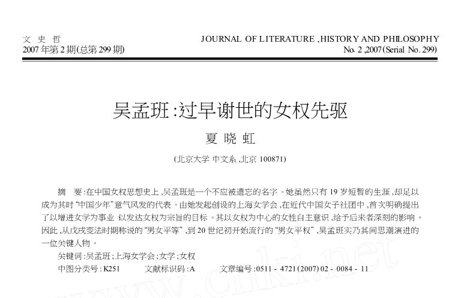
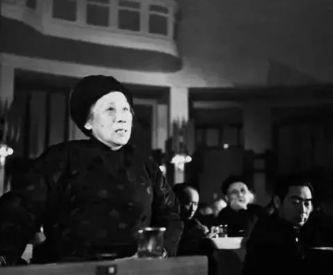
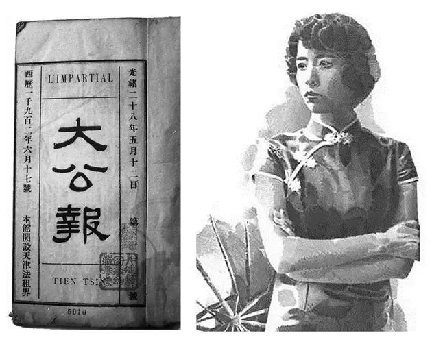
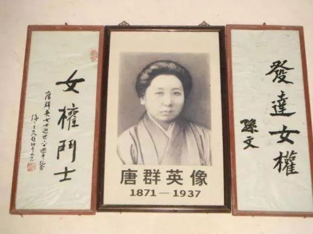
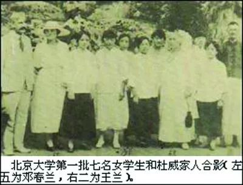
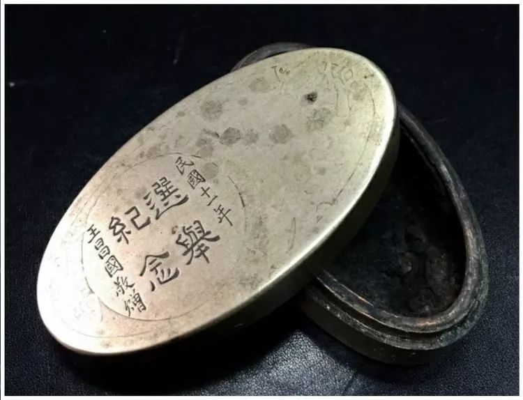
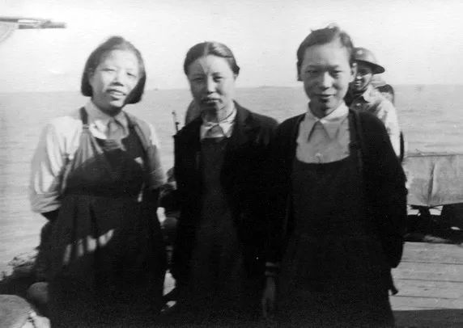
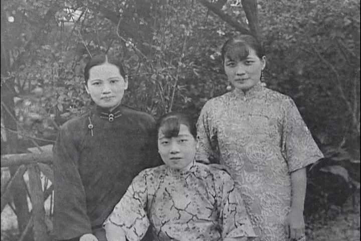

中国百年女权运动光影
中国女权运动始于19世纪末到20世纪初，至今已有百年历程。百年间，涌现了一批杰出的代表人物，她们为争取国家解放和妇女权利做出了不懈的努力。在当前的政治和经济环境下，回望我们走过的历程，对检视我们现有的权利，推动妇女运动继续向前发展仍有重要的意义。
01
第一本完全由妇女主编、面向妇女读者的报纸
1898年（光绪二十四年）7月24日，康同薇、李蕙仙等人创立了《女学报》，这是中国最早的妇女报纸，以妇女为读者对象，完全由妇女主编。
《女学报》有二十几位主笔，全由妇女担任，主笔的名字均刊在报头左侧显著的位置，以彰显其重要性。时人将女学会、女学堂、《女学报》三桩事比喻为一株果树，女学会是根本，女学堂是果子，《女学报》是叶、是花，还称“长久看了这报，定不知不觉的奋发起来。”

（《女学报》中的插图）
02
第一个使用“女权”一词的人
1901年4月，年仅十八九岁的上海教会学生吴孟班，写了一篇《拟上海女学会说》，在《中外日报》刊出。她写到：“中国之积弱由于女权之放失，女权之放失由于女学之式微。思之思之，痛之耻之！”她说道：“女学者，全国文明之母；女权者，万权之元素。”
对于生育，她表示“我生了儿女，要教育二十年，才能够成就一个人才，而我自己不免要重大的牺牲。现在我奋志求学，只要五年，就可以成就一个人才了。为了五年后的人才，牺牲二十年后的人才，在中国朝不保暮的时候，不比较的得计吗?”

（发表在文史哲上的文章《吴孟班：过早谢世的女权先驱》）
03
首次公开纪念国际“三八”妇女节
1924年1月，何香凝当选为国民党中央执行委员会妇女部部长，兼管广东省的妇女工作。她领导出版了《妇女之声》旬刊，举办妇运讲习所，设立女工学校，开展妇女运动，为妇女的解放而斗争。她在广州召开的国民党一大上提出的“妇女在法律上、经济上、教育上一律平等”的提案，获大会通过。同年，3月8日上午，由她提议的中国第一个公开纪念“三八”国际妇女节活动在广州举行，广州各界2000多名妇女参加。
“天下兴亡，匹夫有责。此固男子义务，然与男子同视听、同官骸之女子独非人类乎?然则天下兴亡，吾二万万(女)同胞安能漠视哉!”—《敬告我同胞姐妹》

（何香凝怒斥陈炯明扣押廖仲恺）
04
最早批判社会对男女行为规范持双重标准的人
张竹君早年学医，后来热心公益，积极投身工人运动。1904年4月，张竹君在上海创办女子兴学保险会，主张女子通过“求学”、“合群”的方式摆脱男性的压制。
“人生要求自由，男子可以梳大松辫，穿学士装鞋，妇女为什么不可以！男子坐藤兜（轿子），可以把脚提高，踏在杠上，妇女为什么做不得！做了，又讥评她是"男人婆，招摇过市。"我要做男女平权的运动者……— 张竹君与友人谈
（辛亥革命，张竹君与红十字会救护队队员在汉阳十里铺前线）
05
和秋瑾一起，被誉为“女子双侠”的吕碧城
吕碧城，中国女子教育的先驱，中国第一位动物保护主义者，中国新闻史上第一位女编辑，中国第一位女性撰稿人，开创了近代教育史上女子执掌校政的先例。
“而不知国之有男女，犹人体之有左右臂也，虽一切举动操作，右臂之力居多，然苟将左臂束缚之，斫断之，尚得为活泼之躯乎？尚得为完全之体乎？假使此一臂之人，穴居野处，与人无争，虽缺一臂之力，尚可勉强支持。若驱之入人群争竞之场，其有不颠而踣者鲜矣！”—《论提倡女学之宗旨》
（吕碧城与《大公报》）
06
共创同盟会、三闹参议院、掌掴宋教仁的硬核女权。
唐群英，字希陶，排号恭璐，1871年生于湖南衡山。在世界妇女运动史上，唐群英发起的女子参政运动，在时间上排在第十二位，比日本早了10年。她在参议院为女子争取参政权，被万国女子参政会赞为“在东方作第一声惊人之鸣！”因不让女子参加同盟会，她成立了“女子参政同盟会”，并参与起草了实行男女权力平等十一条政纲。
“凡反对女子参政者将来必有最后之对待方法，即袁大总统不赞成女子参政权，亦不必承认袁者为大总统”。— 得知北京临时参议院否决补订《女子选举法》后与吴景濂辩论

（唐群英故居）
07
北京大学的第一位校友
1919年5月19日，从甘肃省立女子师范甲科学校毕业，已经在兰州教书的邓春兰上书北京大学校长，强烈要求大学解除女禁，招收女生。实行男女同校同班，女子享有和男子平等的教育权利，发出了中国大学解除女禁、男女同校的第一声。
“春兰早岁读书，即慕男女平等主义，盖职业、政权，一切平等，不唯提高吾女界人格，合乎人道主义，且国家社会多一半得力分子，岂非自强之道？”—《春兰上蔡校长书》

（邓春兰：中国第一个呼吁大学开女禁的人）
08
驳斥女子参政运动是调情运动的王昌国
1924年底，《湖南省宪法》修改，王昌国提出要在该宪法中明定女性拥有财产继承权。时任湖南省议员的程子枢提出，取消女性受教育权的提案，并称“女子参政运动是调情运动，应取缔”，王昌国驳斥了该提案，最终使得该提案被取消。

（中国第一位女性省议员王昌国）
09
少数民族女权主义者刘清扬
刘清扬，回族，原籍天津，中国共产党早期党员。1911年，加入同盟会在天津的秘密组织――天津共和会。1919年，发起成立了天津女界爱国同志会，并被选为会长。1919年，发起成立了天津青年进步团体“觉悟社”。
对如何摆脱家庭包办婚姻的咨询，她回信：“第一步‘延迟结婚日期’，到女子师范毕业以后，再向家庭提出否认这个婚约。在自己有了经济独立的能力以后，无妨就脱离家庭，到远处谋生。这是与恶势力奋斗的一个唯一方法。”
“女子解放问题，要求得完全美满的彻底解放，乃是根基于全社会的组织。所以现社会制度一日不推翻，女子问题便一日不能得到完全美满的解决。”—《有志开发女子职业的诸姊妹速起！》

（抗战时期在汉口过江时到武昌为伤兵服务，左起：邓颖超、刘清扬、王汝琪）
10
号召妇女争取自己权利的副主席
1913年5月，宋庆龄从威斯里安女子学院毕业，获文学士学位。临毕业前，她在院刊上发表了《现代中国妇女》一文，她写道“在国外留学学成归国的中国女留学生们在国内担任了重要职务，由于受过更高层次的教育，她们比其他国家的大学生更清楚地认识到，为了共同的幸福，她们要比别人承担更多的义务。她们所取得的毕业文凭，并没有使得她们自命不凡，自视高人一等；她们也没有因此而希望自己成为置身‘象牙之塔’的精神贵族”。
1949年12月10日至16日，亚洲妇女代表大会在北京隆重举行。11日，宋庆龄应邀在会上发表了长篇讲话。她号召亚洲妇女除了争取民族独立和国家发展外，还要为争取妇女应有的权利而斗争。她呼吁，“妇女解放不会是别人装在银盘子里给我们送上来的，我们必须自己争取解放。”

（宋氏三姐妹左起:宋庆龄，宋蔼龄，宋美龄）
后记：本来只是想在电脑上输入几个大家耳熟能详的名字，然后用滚雪球的方法找到10个样本来完成这篇短文，没想到实际操作起来却非常困难。现有的媒体报道不仅数量少，内容上也乏善可陈。在现有的文本中，女权主义者们的身份变成了某人的妻子、某人的女儿，甚至是某人的母亲。她们为追求理想而不懈奋斗的努力被淹没在了一堆冗杂的叙事中、无法剥离。因此，我不得不带着性别的有色眼镜来选择素材并加以编辑，希望能打捞起一批女权主义前辈，借此来证明我们曾切实参与和改变过那段历史。
欢迎留言介绍你了解的“女权主义者”！